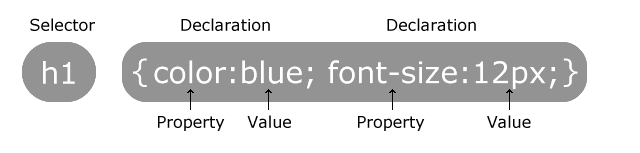

CSS (Cascading Style Sheets) styles your web content
What is CSS? Like HTML, CSS is not a programming language. It's not a markup language either. CSS is a style sheet language. CSS is what you use to selectively style HTML elements.
Learn CSS using this template - codepen.io

This is the HTML element name at the start of the rule set. It defines the element to be styled
This is a single rule like color: red;. It specifies which of the element's properties you want to style.
These are ways in which you can style an HTML element. (In this example, color is a property of the elements.) In CSS, you choose which properties you want to affect in the rule.
To the right of the property—after the colon—there is the property value. This chooses one out of many possible appearances for a given property. (For example, there are many color values in addition to red.)